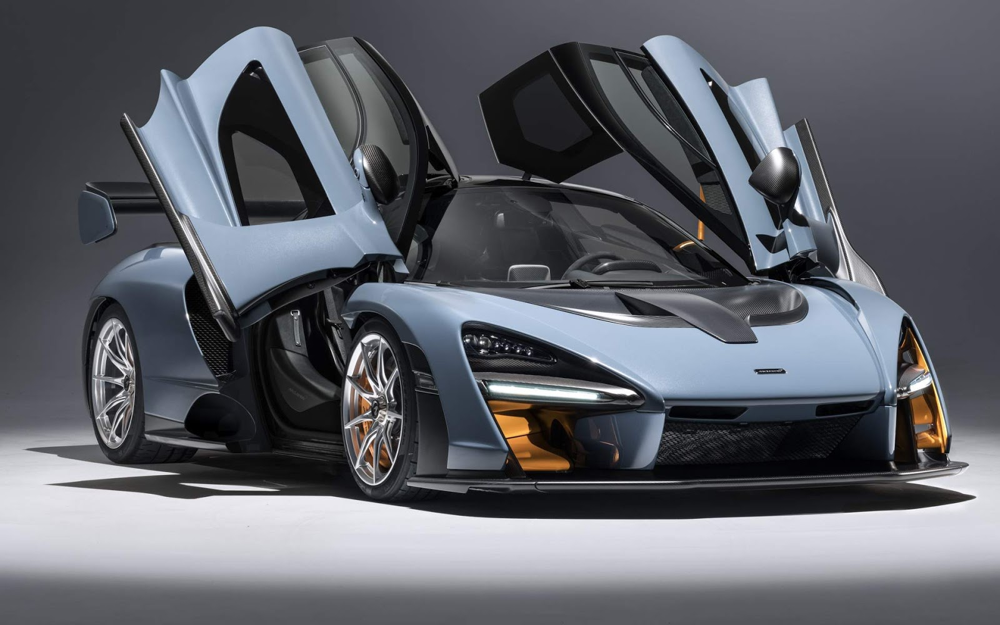

O McLaren Senna é um supercarro hiperesportivo com motor V8 biturbo de 4,0 litros, entregando 800 cv e 800 Nm de torque, capaz de acelerar de 0 a 100 km/h em 2,8 segundos e atingir 335 km/h. Com foco em leveza, ele pesa apenas 1.198 kg, graças à estrutura de fibra de carbono. Seu design aerodinâmico inclui spoiler ajustável e difusores para máxima downforce. O interior é minimalista e voltado para o desempenho, com tecnologia avançada e modos de condução ajustáveis. Produzido em 500 unidades, o Senna é um carro exclusivo, ideal para pistas e experiências de alta performance.
mclaren 765lt
O McLaren 765LT é um supercarro de alto desempenho com motor V8 biturbo de 4.0 litros, entregando 765 cv e 800 Nm de torque. Ele acelera de 0 a 100 km/h em 2,8 segundos e alcança até 330 km/h. Focado em leveza e performance, pesa cerca de 1.230 kg, utilizando fibra de carbono e alumínio. O design é aerodinâmico, com um grande difusor e spoiler ajustável para maior estabilidade. Seu interior é minimalista, com foco no desempenho, e é produzido em edição limitada, tornando-o um modelo exclusivo.
mclaren p1
O McLaren P1 é um supercarro híbrido com motor V8 biturbo de 3,8 litros e motor elétrico, gerando um total de 903 cv e 900 Nm de torque. Ele acelera de 0 a 100 km/h em 2,8 segundos e atinge 350 km/h. Sua estrutura de fibra de carbono e design aerodinâmico maximizam o desempenho e a leveza. O P1 possui um sistema híbrido eficiente, com até 10 km de autonomia elétrica. Produzido em 375 unidades, é um dos carros mais exclusivos da McLaren, combinando alta performance com tecnologia avançada e inovação.